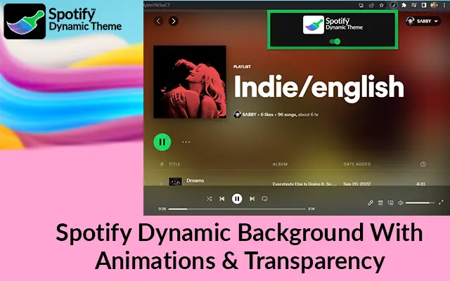

Love vibrant, animated backgrounds with a hint of transparency? Discover the Spotify Dynamic Theme extension – the ultimate upgrade for your Spotify Web Player. Moreover, this cutting-edge theme lets you customize your music experience by changing the background of the song or album cover you're playing, complete with eye-catching transitions and effects. Furthermore, it is designed exclusively for open.spotify.com; this extension ensures a smooth, visually stunning enhancement to your Spotify sessions. Are you excited to transform your Spotify experience? Dive into the installation instructions below to unlock all the amazing features of Spotify Theme. Hence, stay tuned for a step-by-step guide on how to get started!
